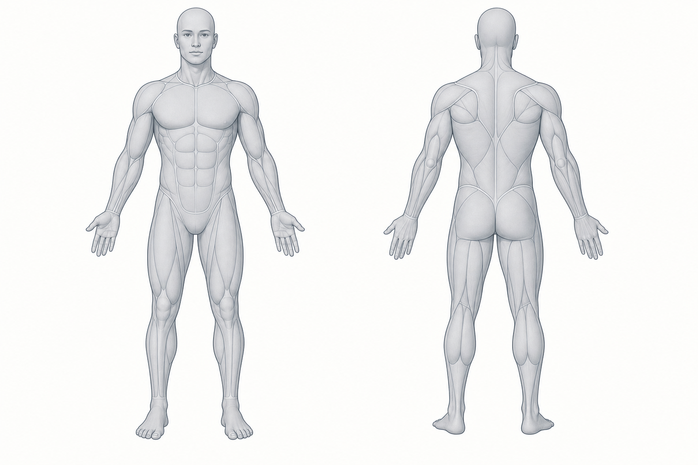

이번 기록에서 읽은 것
첫 기준점을 만들 차례
운동과 식사를 알려주면 목표에 비해 잘된 점, 부족한 점과 다음 행동을 정리한다.
운동과 식사를 알려주면 목표에 비해 잘된 점, 부족한 점과 다음 행동을 정리한다.
기록을 모으는 데서 끝내지 않고, 매번 다음 운동과 식사에서 바꿀 행동을 결정한다.
가장 최근 날짜의 몸 상태, 운동량과 섭취 추정치를 함께 본다.
한국 임상지침과 동료심사 연구를 기준으로 현재 위치와 다음에 볼 지표를 정리한다.
최근 최대 3회의 주동근과 보조근을 앞·뒤 인체 도해에 연결한다.

최근 전체 또는 날짜를 선택하면 그 기간의 운동량과 운동 목록을 확인할 수 있다.
운동을 선택하면 해당 운동의 주동근과 보조근만 지도에 표시한다.
익숙한 7종목을 우선 유지하고, 데이터가 필요성을 보여줄 때만 종목을 바꾼다.
수평·수직 당기기, 가슴·어깨 밀기, 측면·후면 어깨와 삼두 고립 운동이 있어 상체의 큰 움직임은 갖춰졌다.
누적 운동 기록이 있는 날짜를 월별로 확인한다.
측정값을 덮어쓰지 않고 날짜별로 보존해 장기 방향을 확인한다.
| 날짜 | 몸무게 | 골격근량 | 체지방량 | 체수분 |
|---|
필요할 때 펼쳐 운동, 식사와 날짜별 원본 기록을 확인한다.
측정 시간, 수분 섭취, 식사와 운동 여부에 따라 수치가 흔들릴 수 있다. 한 번의 증감보다 여러 기록의 방향을 본다.
운동 이름뿐 아니라 중량, 횟수, 세트와 체감 난도가 있을수록 정체와 회복 상태를 더 정확히 판단할 수 있다.